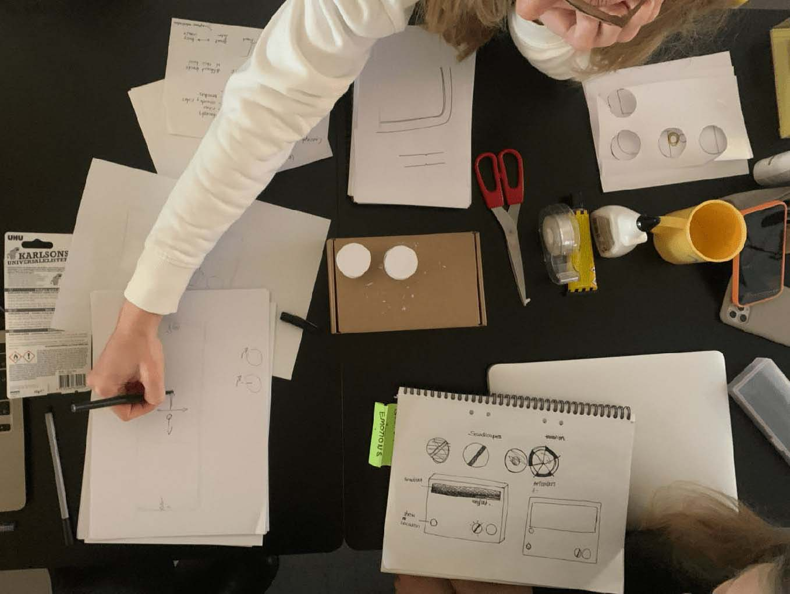

This student project was made during the two-week Sound Design class at the Umeå Institute of Design.
Team: Alexander Widua, Linda Kraft, Romy Koppert,
Mentoring: Andreas Estensen, Thomas Degn,
Context: Sound Design at Umeå Institute of Design,
Tools: Arduino, After Effects, Vital.audio
My role
In the team, besides being strongly involved in the conception process, one of my main responsibilities was to find a intuitive gesture input to navigate through our interface. Inspired by the globe, I aimed to incorporate its shape as a core element in the navigation.
Afterward, my main task was the design of the zoomed in part and to do the animation together with Linda.
How might we turn sound into an explorative experience?
Challenge The longing to discover new places
Sound plays a big role in how we perceive the world. Inspired by the term Wanderlust, which can be translated as a strong desire to travel, we wondered how to utilize sound to meet people's longing to discover and explore places.
Solution Creating an explorative experience
Globe.fm is an object that allows people to experience the world through sound based on the selected location. Reminiscent of a traditional radio, Globe.fm lets users browse through different sound channels.
The Process of designing Globe.fm
Rapid prototyping and testing meant that we were able to fail quickly in order to move on.
Validation and iteration
During various iterations, we build quick exploratory prototypes with different tangible inputs and tested them afterward on people.

Analyzing world map visualization and navigation in software tools.
While testing, we found out that the sphere input together with the visualization proved to be very intuitive and even playfully encouraged exploration.
Testing gesture input with one of our very early prototypes.
Finding the right level of abstraction
One challenge was how to map the sound to the visualization. After long iterations of testing, we realized that we needed to heavily abstract the world map to be able to scroll through the soundscape without too many sounds intersecting with each other.
Becoming aware of our world map biases üåè üåç üåé
After showing the map visualization to classmates from different cultural backgrounds, we noticed that the map had a bias with mainly Europe in the center.
To ensure that every user could identify with the world visualization, we went through different map projections to mitigate the map bias.
Bringing things together
Using Arduino, we build several interactive screen prototypes to validate the world view using controls and sound by testing them with potential users.
Globe.fm in the making. ü•æüåé
What I have learned
As the only one with a digital background among the industrial designers, I had a different perspective on things, which turned out to be very positive in this constellation. Designing an interface that was not only operated by tapping or swiping, but by more sophisticated interactions was an exciting challenge for me, as I had previously worked mainly on mobile or desktop applications. I realized that my strong conceptual skills go beyond screen-based design.
In retrospect, we were able to find a good solution for the object's interaction, but we could have spent more time exploring its interaction modalities even further.